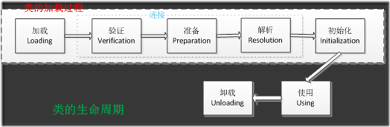

Java类加载机制中最重要的就是程序初始化过程，为什么静态方法不能调用非静态属性？为什么非静态方法又不能调用静态属性？等等一系列问题。这里就分析一下他的加载原理，从而得到问题的答案。
例一
1 | class Cat { |
一个类的初始化顺序就是这样，静态代码块->非静态代码块->构造器，但是你仔细看会发现当我们new两次cat的时候，静态代码块只执行了一次！
PS：换行是我自己加上去的
再来看另外一个例子
例二
1 | // 添加了一个父类 |
这个例子用到了继承的关系：cat 继承 Animal 初始化顺序
父类静态->子类静态->父类非静态代码块->父类构造器->子类非静态代码块->子类构造器
这里我是很有疑问的，首先父类先加载我不反对，但是为什么父类构造器比子类代码块先执行？
下面就正式分析类的生命周期，从而知其然知其所以然。
类的生命周期
